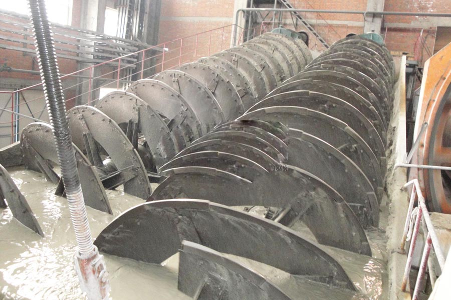

Construction waste crushing production line

Mobile construction waste crushing station for urban construction waste crushing.
Low Intensity Magnetic Separator
Low Intensity Magnetic Separator. Classifier, spiral classifier, grading machine prices, dressing grader is an important mineral processing equipment, used mainly spiral classifier. Grading machine is widely used in the concentrator with the ball dubbed sub-Cheng Cheng closed cycle shunt ore sand, gravity concentrator to grade ore and fine clay.
Classifier, spiral classifier price, grading machine manufacturer, spiral classifier is one of beneficiation equipment is widely used in the concentrator with the ball dubbed sub-Cheng Cheng closed cycle shunt mineral sands, or used in a gravity concentrator to grading ore and fine clay, and metal beneficiation processes for pulp particle size classification.

Gold Spiral are gravity concentrators and separate gold minerals of distinct specific gravity based on their relative movement in response to gravity, centrifugal force along with other forces inside the fluid medium. It has incredibly excellent performance and effects in processing placer of beach, riverside, seashore and stream. CAG mining machinery factory gold spirals separator are produced of polyurethane lined fiber glass with wearable corundum inner surface. Usually you can find five turns in 1 begin, single, twin, triple and quad begins accessible per column to suit capacity requirments.
Ghana gold spiral separator for sale. Work Principle: Gold Spiral Separator,the stuff of various weights falls at various speeds inside the fluid.The indented cylinder is used for re-separation of distinct shapes and densities broken mine powder as well as other impurities.Spiral Separator can get rid of the dust within the mine powder. It has grow to be obverous that clarification is needed relating to the use of the spiral cleaner. Any previous memos relating to this concern are to be disregarded. Application Rutile, ilmenite and zircon concentration. Iron ore, chromite and manganese beneficiation. Tin, tantalum and ore concentration. Gold, native copper and base metal recovery. Silica sands processing. Titano-magnetite concentration. Features 1)Simple structure; 2)Dependable operating condition; 3)Handy operation; 4)Allows the fine ore to flow in the water.
Double spiral classifier, a single spiral classifier, classifier high weir, overflow top end of the spiral blade is higher than the overflow surface and overflow terminal helix center below the overflow surface. Mainly used for overflow granularity of ore grading 0.83-0.15mm.
Ghana gold spiral separator supplier. Spiral classifier works with classification, spiral classifier is generally semi-circular sink consists of the following components; a row of ore bodies augers; on the support of the screw shaft, the lower bearing portion; gears and helical screw shaft shaft lifting mechanism.
Leave Me A Message, Now
If you have any questions regarding equipment prices, production line configuration or other problems, you can send a message to us, we will contact you soon.